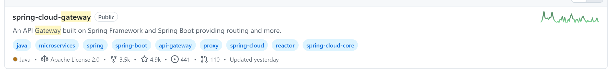
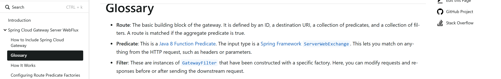
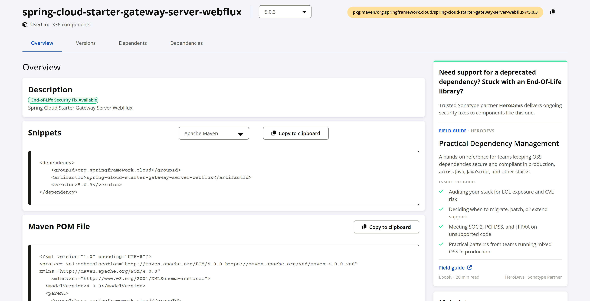
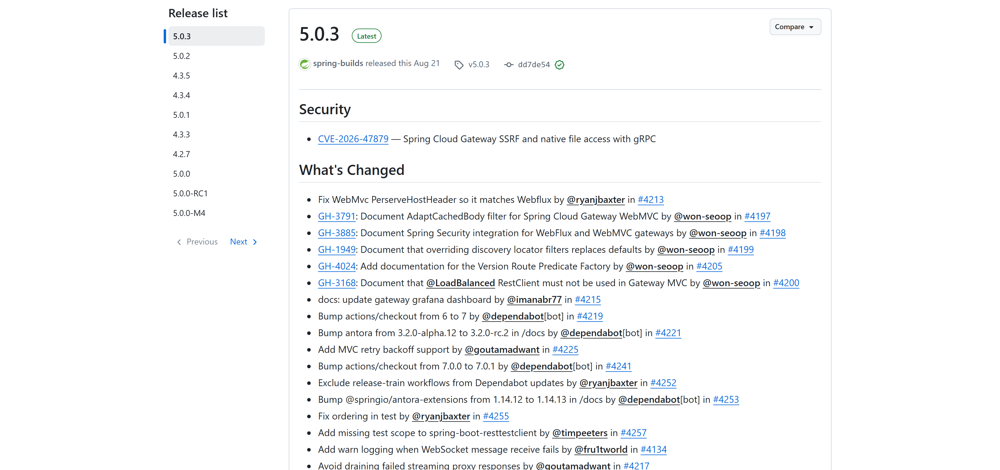

OSS PROJECT INTRO · SPRING CLOUD GATEWAY 系列第 1 期：认识项目
上一个项目我们聊完了 Harbor，今天开启新项目 Spring Cloud Gateway。所有微服务请求都要从某个"大门"进来：路由转发、认证鉴权、限流、灰度发布，这些事总得有个统一的门卫来管。Spring Cloud Gateway（下文按社区习惯简称 SCG）就是 Spring 交出的答案。官方定义一句话：a library for building an API Gateway on top of Spring…aims to provide a simple, yet effective way to route to APIs and provide cross-cutting concerns to them such as: security, monitoring/metrics, and resiliency——在 Spring 之上构建 API 网关，把安全、监控、韧性这些横切关注点统一接到 API 前面。一句话心智模型：响应式网关——请求进来先匹配路由（Predicate 断言），再过过滤器链（Filter），然后转发到下游服务。本期结束，你能答上四个问题：SCG 是什么、网关要解决什么、和 Nginx/Kong 怎么分工、什么场景该选它。
服务一拆成几十个微服务，第一件事不是服务本身出问题，而是门口先乱。没有统一网关的日子，通常是这样的：
有人说"这些 Nginx 不都干了吗？"——这正是选型里最经典的取舍。Nginx 是静态高性能的反向代理：配置写死在文件里，改路由要重载配置；扩展要写 C 模块或上 OpenResty 写 Lua，与 Java 技术栈是两张皮。而"按请求头里的用户标签灰度""按接口维度限流""从注册中心自动发现新服务"这类业务语义的路由，恰恰需要代码级扩展——这就是 SCG 的位置：网关长在 Spring 生态里，路由和过滤器都是 Java 代码或配置，跟你的微服务同一种语言、同一套治理体系。
spring.io 项目页的官方定义值得逐词读（2026-09-19 核对）："This project provides a library for building an API Gateway on top of Spring. Spring Cloud Gateway aims to provide a simple, yet effective way to route to APIs and provide cross-cutting concerns to them such as: security, monitoring/metrics, and resiliency."注意定位词是 library（类库）而不是独立中间件——它跟着你的 Spring Boot 应用一起启动、一起部署，这是它跟 Nginx/Kong 这类独立网关最大的形态差异。同页特性清单里，官方点名了这些本事：构建在 Spring Framework 和 Spring Boot 之上、同时兼容 Spring WebFlux 与 Spring Web MVC 两种形态、能按任意请求属性匹配路由、断言与过滤器按路由生效、集成熔断（CircuitBreaker）与服务发现（DiscoveryClient）、限流、路径重写。
一句话心智模型：响应式网关——请求进来先匹配路由（Predicate 决定"这条请求走哪条路"），再过过滤器链（Filter 决定"路上要做什么加工"），然后转发到下游服务，响应原路返回时还能再加工一次。官方文档《How it works》的原话：客户端请求进入 SCG，若 Handler Mapping 判定匹配某条路由，就交给 Web Handler，把请求穿过一条为该请求定制的过滤器链——过滤器分虚线两侧，转发前的逻辑（pre）与转发后的逻辑（post）各跑一遍。

GitHub spring-cloud 组织仓库列表中的 spring-cloud-gateway 卡片：About 自述 An API Gateway built on Spring Framework and Spring Boot providing routing and more · Java · Apache License 2.0 · Star 4.9k · Fork 3.5k · 话题标签 java、microservices、reactor 在列（2026-09-19 截图，github.com/orgs/spring-cloud/repositories）。整个网关的心智就三步：① 断言筛路 → ② 前置过滤器加工请求 → ③ 转发下游，响应回来再走 ④ 后置过滤器。断言是"门槛"，过滤器是"关卡"——记住这组比喻，第 3 期拆 Handler Mapping、RouteLocator 这些组件时，你会发现它们全是这句话的展开。
网关的第一能力是"把请求转给谁"。下面是官方文档（v5.0.3）的路由配置样例，一眼能读懂（出处：Configuring Route Predicate Factories and Gateway Filter Factories）：
spring:
cloud:
gateway:
server:
webflux:
routes:
- id: after_route
uri: https://example.org
predicates:
- Cookie=mycookie,mycookievalue一条路由四要素：id 是名字，uri 是目的地，predicates 是断言（这里这条的含义：请求带了名为 mycookie、值为 mycookievalue 的 Cookie 才放行）。断言写起来像口头禅——Path=/api/** 按路径、Header=X-Request-Id, \d+ 按请求头、After=2026-01-20T00:00:00+08:00[Asia/Shanghai] 按时间做定时开闸。官方术语表（Glossary）给三个核心词的权威定义：
| 概念 | 官方定义（Glossary，v5.0.3） | 一句话翻译 |
|---|---|---|
| Route 路由 | "The basic building block of the gateway. It is defined by an ID, a destination URI, a collection of predicates, and a collection of filters. A route is matched if the aggregate predicate is true." | 网关的基本积木：ID + 目的地 + 断言集 + 过滤器集，断言全真才命中 |
| Predicate 断言 | "…The input type is a Spring Framework ServerWebExchange. This lets you match on anything from the HTTP request, such as headers or parameters." | 匹配条件：请求里任何东西都能当匹配依据 |
| Filter 过滤器 | "…instances of GatewayFilter…you can modify requests and responses before or after sending the downstream request." | 加工环节：转发前后都能改请求改响应 |

官方文档 Glossary 页：Route / Predicate / Filter 三个词的权威定义，本表逐条对照（docs.spring.io，v5.0.3，2026-09-19 截图）。
Maven Central 的 spring-cloud-starter-gateway-server-webflux 坐标页：当前版本 5.0.3、"Used in: 336 components"（被 336 个组件依赖）；Description 区的"End-of-Life Security Fix Available"徽章是 Sonatype 面向停维旧版本线的商业支持提示，与 5.0.3 现行版本无关（2026-09-19 截图）。| 指标 | 数值 | 来源与口径 |
|---|---|---|
| GitHub Stars | 4.9k（4,908） | spring-cloud/spring-cloud-gateway 仓库页与 GitHub API，2026-09-19 核对 |
| Maven Central 被依赖 | 336 个组件 | central.sonatype.com 坐标页 "Used in"，2026-09-19 核对（Spring 项目走 BOM 管理依赖，此数低估真实采用） |
| 首发时间 | 2017-11 | Maven Central 首个 1.0.0.RELEASE 制品记录（2017-11-22） |
| Spring Initializr | 双选项内置 | start.spring.io 的 Spring Cloud Routing 分组同时提供 Gateway（Servlet）与 Reactive Gateway（WebFlux），2026-09-19 核对 |
| 开源许可 | Apache-2.0 | 仓库 license 栏，商用友好 |
| 最新稳定版 | 5.0.3 | GitHub Releases Latest，2026-08-20 发布（UTC） |
两处提醒。其一，SCG 的 star 数（4.9k）在 Spring 系项目里不算显眼——因为 Spring 用户的依赖管理走 BOM 而不是追仓库，看采用要看 Maven Central 的依赖数与 Initializr 的"第一方选项"地位。其二，版本线口径：5.0.x 对应 Spring Cloud 2025.1（代号 Oakwood）列车，搭配 Spring Boot 4.x；旧 starter spring-cloud-starter-gateway 停在 4.3.x（对应 Boot 3.5 的 2025.0 列车，仍在维护）。5.0 起新坐标拆成 spring-cloud-starter-gateway-server-webflux（响应式，经典形态）与 spring-cloud-starter-gateway-server-webmvc（Servlet 形态）两个，第 2 期动手时用哪个别拿错。

GitHub Releases：5.0.3 标记 Latest（spring-builds released this Aug 21，UTC 2026-08-20 19:14），首要条目是一条 SSRF 安全修复（CVE-2026-47879）；左侧列表可见 5.0.2 与 4.3.5 同日（2026-06-11）发布——5.0.x 与 4.3.x 双版本线并行维护（2026-09-19 截图）。本系列全部口径锚定 5.0.3。spring-cloud-starter-gateway 2.0.0，12 月 Spring 官方宣布 Spring Cloud Netflix 进入维护模式，原话建议 Zuul 用户"consider moving over to Spring Cloud Gateway"；这段演进故事读下来，比任何选型文章都直白：社区等一个上游的响应式网关等了两年没等到，Spring 就自己造了一个。Zuul 1 的阻塞模型在高并发转发场景线程开销大，Zuul 2 的技术方向（Netty 异步）是对的，但"跳票"把生态位让了出来——SCG 用 Reactor 把同样的非阻塞思路装进了 Spring 的编程模型，这才是它坐上 Spring 生态默认网关位置的根本原因。
网关赛道玩家不少，各就各位（定位为各项目官方公开口径，2026-09 核对）：
| 方案 | 定位 | 扩展方式 | 技术栈与形态 |
|---|---|---|---|
| Spring Cloud Gateway 5.0 | Spring 生态的代码级 API 网关：路由 + 过滤器即代码 | Java 写 Predicate/Filter，跟业务同栈 | Java · Spring Boot 应用内嵌；WebFlux（响应式）/WebMVC（Servlet）双形态 |
| Nginx | 静态高性能反向代理与负载均衡 | C 模块、OpenResty（Lua） | C · 独立进程，配置文件驱动 |
| Kong | API 网关平台，插件生态丰富 | 插件机制（Lua/Go 等），管理面完善 | OpenResty/Lua · 独立部署 + 数据库 |
| Zuul 1 | 上一代 Java 网关老将（Netflix OSS） | Java Filter，阻塞 Servlet 模型 | Java · 已随 Spring Cloud Netflix 进维护模式 |
分工怎么定？Nginx/Kong 管接入层的"静态流量"：TLS 卸载、静态资源、粗粒度路径转发，性能是第一诉求；SCG 管业务语义层：要读请求内容做认证、按用户标签灰度、按接口限流时，代码级扩展才是刚需。生产里常见的组合是 Nginx 在前、SCG 在后——接入层归 Nginx，业务网关归 SCG，两层各干各的，并不重复。如果你的主栈是 Spring Cloud Alibaba，SCG 与 Nacos 的组合是常见搭配：服务清单从注册中心自动来，路由跟着服务走——这条动态路由的线，本系列第 5 期展开，Nacos 本身的入门见本系列第 0001~0005 期。
✅ 适合：
❌ 错配：
一条判断捷径：当路由规则需要"读懂请求"（认证、灰度、限流、按内容转发）的那一天，就是需要代码级网关的一天；规则如果永远写不满一页 Nginx 配置，就别急着上。
延伸阅读两则：K8s 集群入口层（Ingress 与 Gateway API）怎么把流量从公网送进集群，属于基础设施视角，原理深入见 daily 系列 0024 期；网关后面的服务注册与发现，见本系列 Nacos 系列第 0001 期起的五连讲。
每题点击选项立即反馈 · 共 4 题
1. SCG 处理一条请求的顺序，哪个是对的？
2. 只需要"TLS 卸载 + 静态资源 + 简单路径转发"，该选谁？
3. 相比 Zuul 1，SCG 最根本的变化是什么？
4. 哪种情况说明"该上代码级网关了"？
先说结论：不重复，前提是两层各司其职。判断边界的方法是看"规则需不需要读懂业务"。Nginx 这一层管的是与业务无关的接入面：TLS 终止（证书只有一份，别让 Java 进程碰）、HTTP/2 与压缩、静态资源、机房级别的粗粒度分流、DDoS 防护的第一道闸——这些规则几年不变一次，配置文件是最可靠的载体，重载即生效、性能天花板高。SCG 这一层管的是随业务演进的路由语义：请求头里的灰度标签、按用户分群的切流、按接口的限流配额、从注册中心自动发现的新服务——这些规则月月在变，甚至天天在变，用 Java 代码管理才有测试、有版本、有发布流水线。什么时候真的重复？三种情况：一是团队只有几个单体服务、路由规则写不满一页，Nginx 足够；二是把 SCG 当 Nginx 用（只配 Path 转发），那是花了 JVM 的成本买了 Nginx 已有的能力——上 SCG 就要把认证限流灰度这些真活交过去；三是把业务逻辑写进 Nginx 的 Lua 脚本里，用接入层的高性能承载业务语义——改一次逻辑要碰全公司流量入口，发布风险和排障难度都会失控。记住分工口诀：接入层管"快"，业务网关管"变"——两层都用在自己擅长的属性上，架构才清爽。
这段历史至少给三条选型判断依据。第一，看"路线图主导权"，不只看"功能清单"。2016 年时 Zuul 1 功能完全够用，Netflix 也画了 Zuul 2 的饼——但饼的兑现节奏掌握在一家公司手里，它内部优先级一变，整个依赖它的生态就得跟着等。选基础组件时，问一句"下一代的路线谁说了算、到期不交付我有什么办法"，比看现有功能清单重要得多。Spring 的选择是用开源协作把主导权收回来：SCG 由社区共建、按 Spring 的发布列车走，节奏可预期。第二，"技术方向正确"救不了"交付节奏失控"。Zuul 2 的 Netty 异步方向本身是对的，最后却丢了生态位——说明生态竞争里"什么时候能用"和"好不好用"同等重要，第二个交卷的先发者往往只能吃存量。第三，替代窗口出现时要敢于自研，但要押在自己最有掌控力的层。Spring 没有 OS 层、没有代理层自研，偏偏在"Spring 编程模型"这一层造网关——把 Reactor 的响应式能力包装成 Spring 开发者熟悉的样子，学习成本最低、迁移路径最短。对应到自己的工作：造轮子不可怕，可怕的是造在别人地盘上；在"离自己用户最近的那一层"自研，成功率最高。最后留个现实注脚：今天 SCG 自己也面对开源商业化时代的节奏问题（Broadcom 主导 Spring），这也是它推出商业版网关产品的背景——主导权问题永远值得定期重问。
带走这五句话：
下期预告：第 2 期《5 分钟跑起来》——从 start.spring.io 生成一个网关应用，写两条路由把它跑起来，命令与预期输出逐条对照官方文档，顺便认清 WebFlux 与 WebMVC 两个 starter 该拿哪个。
Primary source：Spring Cloud Gateway 官方文档 · 5.0.3——本期定义、Glossary 术语与路由样例均出自该文档（与 5.0.3 版本匹配）；项目定位与特性清单见 spring.io 项目页，版本与发布记录见 GitHub Releases。